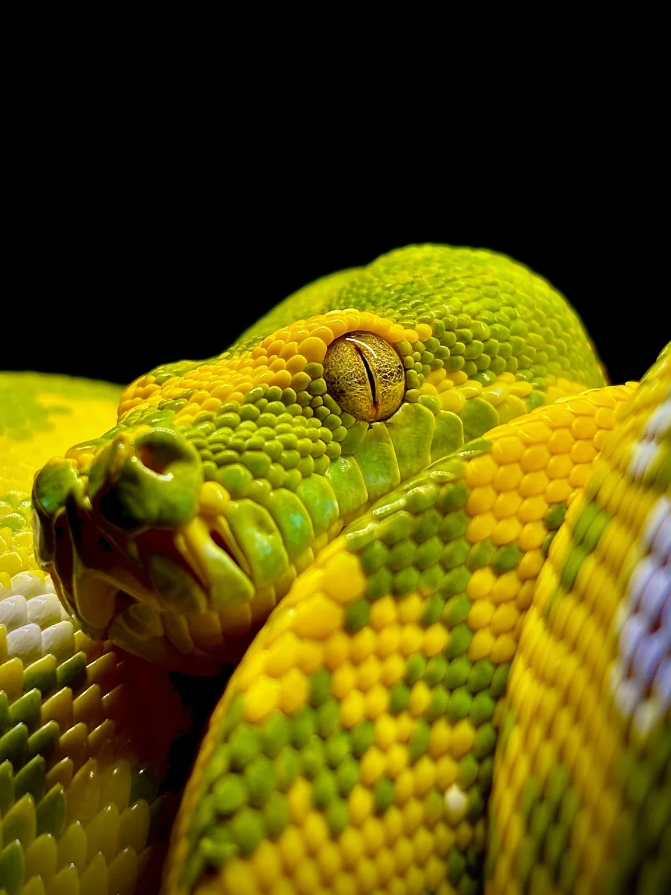
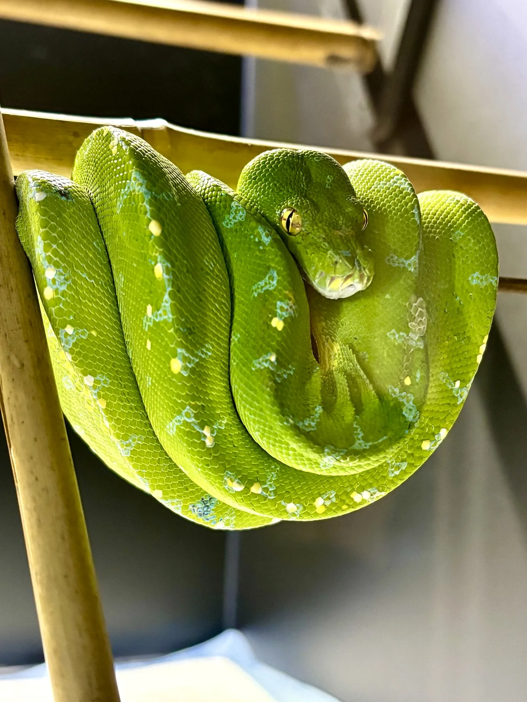
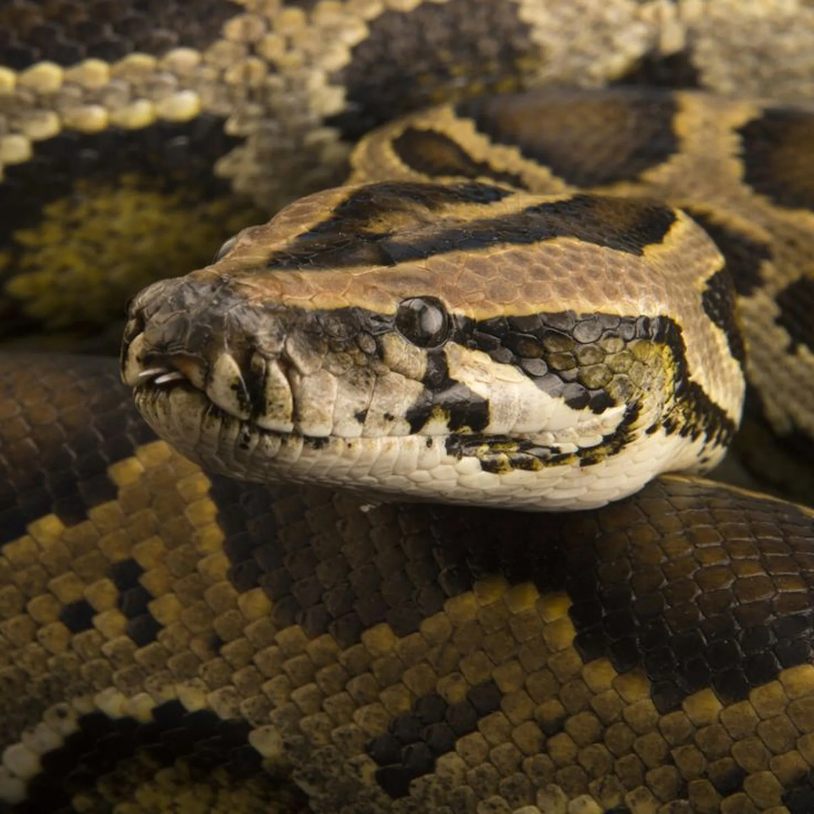
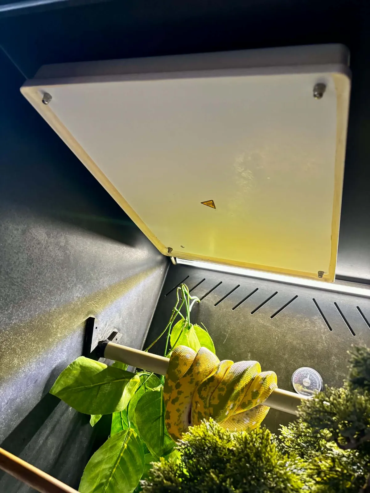
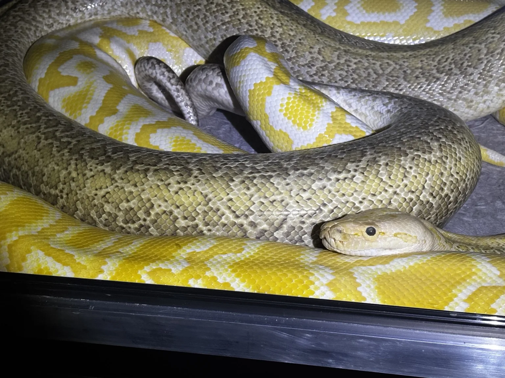

PASJA • DOŚWIADCZENIE • ODPOWIEDZIALNA HODOWLA
GONZO EXOTICS
Specjalizujemy się w hodowli wyjątkowych gadów, z naciskiem na dobrostan, zdrowie, rzetelną dokumentację pochodzenia i świadomy dobór par hodowlanych.
DOWIEDZ SIĘ WIĘCEJ →
GONZO EXOTICS
Hodowla oparta na jakości i odpowiedzialności
Wszystko zaczęło się od jednego ptasznika
Moja przygoda z terrarystyką zaczęła się w 2007 roku. Pierwszy był ptasznik Acanthoscurria geniculata. Później pojawiały się kolejne, a szczególne miejsce zajęły pająki z rodzaju Poecilotheria. Tak zaczynała się historia, która z czasem stała się ważną częścią naszego życia.
Pierwszym wężem był Lampropeltis californiae. To od niego zaczęła się pasja do węży, która została ze mną do dziś. Następny był już upragniony dusiciel — Boa constrictor. Z czasem spełniło się też marzenie o nadrzewnych perełkach: pytonach zielonych Morelia viridis i boa psiogłowych. Gatunki nadrzewne hoduję od lat i zajmują szczególne miejsce w mojej pasji.
W hodowli są również pytony birmańskie. Uwielbiam ich potężną budowę i spokój, który potrafią zachować w kontakcie z człowiekiem. Ten podziw zawsze musi jednak iść w parze z szacunkiem do ich siły — duży, spokojny wąż nadal wymaga odpowiedzialnej obsługi.
Dziś to nasza wspólna historia
Gonzo Exotics prowadzimy razem z moją żoną. Zwierzęta były obecne w naszym życiu od zawsze. Łączy nas nie tylko zachwyt nad nimi, ale też radość z codziennej opieki i poznawania ich potrzeb. Przez nasz dom przewinęły się między innymi legwany zielone, bazyliszki pręgowane i lancetogłowy mleczne. Jak widać na stronie, dziś również tętni tu życie — mamy swoje małe zoo.
Za zdjęciami i nazwami gatunków stoją żywe zwierzęta, za które odpowiadamy każdego dnia. Dlatego tak ważne są dla nas właściwe warunki, zdrowie, dokumentacja pochodzenia i uczciwe mówienie o hodowli. Wieloletnia pasja nie oznacza, że wiemy już wszystko. Chcemy nadal się uczyć, rozwijać i robić to wspólnie.
Mam jeszcze jedno szczególne marzenie: parę Corallus batesii, boa szmaragdowych z dorzecza Amazonki. Na razie pozostaje ono przede mną. I dobrze mieć coś, na co wciąż czeka się z taką samą ekscytacją jak na pierwsze zwierzę.
Od jednego ptasznika do pasji, którą dzielimy we dwoje. To właśnie nasza historia — i nadal ją piszemy.
GŁÓWNE GATUNKI
Specjalizacja hodowli

Morelia viridis
Green Tree Python — biologia, warunki, żywienie, rozmnażanie i galeria.
Poznaj gatunek →Corallus caninus
Emerald Tree Boa — biologia, środowisko, pielęgnacja, rozród i galeria.
Poznaj gatunek →
Python bivittatus
Pyton birmański — hodowla, żywienie, rozmnażanie, morphs i genetyka.
Poznaj gatunek →BLOG
Wiedza o zwierzętach egzotycznych w praktyce
Rzetelne wpisy o biologii, zachowaniu, żywieniu i odpowiedzialnej opiece. Oddzielamy dane naukowe, praktykę hodowlaną i obserwacje konkretnych zwierząt.

Ile kosztuje utrzymanie węża?
Cena zwierzęcia to dopiero początek. Liczę terrarium, ogrzewanie, termostat, prąd, karmówkę i opiekę weterynaryjną. Konkretne oferty, dwa kosztorysy i wydatki, o których łatwo zapomnieć.
Czytaj wpis →GALERIA
Zdjęcia z hodowli

DOSTĘPNE OSOBNIKI
Aktualne młode i rezerwacje
W tym miejscu pojawią się aktualnie dostępne osobniki wraz z datą wyklucia lub urodzenia, płcią, pochodzeniem, sposobem karmienia, zdjęciami, statusem rezerwacji i dokumentacją.
HODOWLA
Dokumentacja, dobrostan i świadome rozmnażanie
Udokumentowane łączenia, rodzice, przebieg inkubacji i rozwój młodych w Gonzo Exotics.

Hera × Tyson
Classic Albino het Granite × Hypo Granite het Albino
KONTAKT